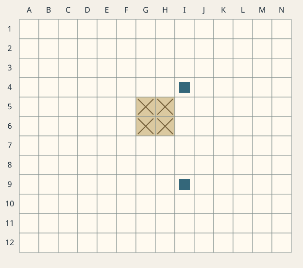

Одинаковые правила, разная история
Все карты совпадают с сеткой нативного пакета: 14 × 12, клетка — 5 футов. G5/H5/G6/H6 — трудная местность; I4/I9 — половинное укрытие. Остальные детали описания декоративны, пока ведущий не изменил поле штатно.
Расстановка и параметры
Герои в порядке списка встречи: B3, B4, B5, B6, C3, C4, C5, C6. Противники: L3, L4, L5, L6, M3, M4. Используйте только нужное число фигур.
Для 3 / 4 / 5 / 6 / 7 / 8 игроков: 2 / 3 / 3 / 4 / 5 / 6 противников, здоровье каждого 12 / 14 / 16 / 18 / 20 / 22. Защита 12; скорость 20 футов; одна ближняя атака +3, 1d4+1 дробящего урона, досягаемость 5 футов.
Перед запуском встречи герои должны находиться в её локации. После сыгранного перехода ведущий перемещает участвующих персонажей обычным действием приложения; герои в других местах автоматически в бой не попадают.
Враги — простая поддерживаемая модель. Мирные решения и ограничения сцены описаны отдельно; ведущий подтверждает их результат. После первого раунда напомните пути переговоров или отступления. Встречи не запускаются автоматически.
Прыгуны на сухом берегу
Только если герои сознательно пытаются отодвинуть занятые гнездовые камни после предупреждения Тимы; ведущий предлагает встречу и запускает её лишь по выбранному действию группы.
Цель и выходы
Перенести сухие листы к верхнему берегу, не разоряя гнёзда, либо отказаться от короткого подхода. Победа над существами не нужна для улики и перехода по широкому западному берегу.
Обойти по широкому западному берегу, отложить перенос до ухода прыгунов или предложить пустой сухой лоток рядом с гнездом и дождаться их самостоятельного ухода. Для мирного обхода бросок не нужен.
Поведение противников
Небольшое четвероногое пещерное существо с пластинчатой спиной и кисточками на ушах. Оно защищает гнездо, а не охраняет тайное знание.
Прыгуны держатся возле гнездовых плит, используют обычное перемещение и единственную ближнюю атаку. Не гонятся за отступающими. При освобождении плит или снижении половины группы существ до половины здоровья оставшиеся отходят в щели; это решение ведущего, не новый автоматический эффект.
Размер группы
Для 3/4/5/6/7/8 игроков: 2/3/3/4/5/6 существ; у каждого соответственно 12/14/16/18/20/22 хитов, КД 12, одна ближняя атака +3, урон 1d4+1. При 3 игроках один герой переносит записи, двое отвлекают; при 4–5 две пары делят подходы; при 6–8 каждый получает перенос, наблюдение или защиту без добавочных атак существ.


Сетка 14×12: столбцы A–N, ряды 1–12. Центральная мокрая галька F5–I8 — трудная местность; камни C3, C4, L8 и L9 дают укрытие. Широкий западный обход A2–B11 остаётся свободным. Прыгуны начинают на восточных гнездовых плитах J4–M8, герои у южного берега B10–E11.
Крылья вокруг фонаря
Не автоматически: встречу можно выбрать, если отряд после видимого предупреждения несёт открытый яркий фонарь прямо к выводку крупных пещерных мотыльков и хочет удержать эту позицию.
Цель и выходы
Перенести источник света в сторону и оставить наблюдателям видимый выход либо отойти к широкому обходу. Результат нужен ради удобного поста; внешний маршрут и наблюдение жилок сохраняются без боя.
Прикрыть фонарь обычной заслонкой, держать спокойный рассеянный свет со стороны обхода и пройти по широкой дорожке. Можно поставить светильник в стороне с заслонкой со стороны людей и дождаться, пока мотыльки переместятся к его открытой стороне; ни заклинание, ни вред существам не нужны.
Поведение противников
Пещерное создание величиной с дорожную сумку, с мягкими серыми крыльями и короткими цепкими лапами. В игровой встрече передвигается по земле и камням обычным движением; полёт не даёт отдельной механики.
Мотыльки приближаются к ближайшему открытому фонарю, а при тесном контакте пользуются одной обычной ближней атакой. Не читают намерений и не перекрывают все выходы. Если фонарь убран за непрозрачную заслонку или группа отступила, ведущий завершает встречу их отходом.
Размер группы
3/4/5/6/7/8 игроков встречают 2/3/3/4/5/6 существ с 12/14/16/18/20/22 хитов соответственно. КД 12; одна ближняя атака +3 на 1d4+1. Для 3 игроков держите весь отряд у одного края; для 4–5 доступны две позиции фонаря; для 6–8 распределите перенос света, бумаги и наблюдение по парам, сохранив один общий выход.

Поле 14×12, A–N и 1–12. В центре F5–I8 лежат рыхлые каменные крошки: трудная местность. Массивные выступы C4, D4, K9 и L9 дают укрытие. Северный и южный края широки. Мотыльки начинают E3–J4, герои B9–E11; выход по A–B не занят существами.
Слюдяные клубки у ящика
Только если группа решает немедленно отнять ящик, на котором устроились слюдяные клубки, вместо доступного обхода, обмена пустой тарой или ожидания.
Цель и выходы
Получить бумагу из открываемой боковой крышки или переместить запасной ящик на сухой островок. Единственная обязательная улика и единственное средство возвращения в ящике не хранятся.
Открыть боковую крышку без перемещения гнездовой верхушки, предложить пустую коробку с обычной тёплой тканью либо пользоваться уже выданной бумагой. Можно отступить и вернуться позже; это конкретная потеря удобства, а не блокировка финала.
Поведение противников
Маленькое природное волшебное существо из сухих прозрачных пластинок. Оно сворачивается вокруг тёплой плоской поверхности; речи, тайного плана и связи с разумом горы у него нет.
Клубки остаются возле выбранной тары и отталкивают приближающихся единственной ближней атакой. Используют обычное движение, не накладывают особых состояний. Если ящик оставлен или предложена соседняя тёплая пустая коробка, ведущий даёт им отойти; преследования нет.
Размер группы
Для 3/4/5/6/7/8 игроков берутся 2/3/3/4/5/6 клубков; хиты каждого 12/14/16/18/20/22, КД 12, одна ближняя атака +3 с уроном 1d4+1. При 3 игроках один работает с крышкой, двое прикрывают; при 4–5 добавляется перенос пустой тары; при 6–8 пары одновременно работают у разных свободных сторон, не добавляя особых действий врагам.

Сетка 14×12: A–N, 1–12. Центральные осыпи F5–I8 — трудная местность; тяжёлые ящики C3–D3 и K9–L9 дают укрытие. Гнездовой ящик стоит J5–K6, клубки рядом J4–L7, герои B8–E10. Внешний обход по A1–B12 свободен, прозрачные лепестки находятся за пределами поля.